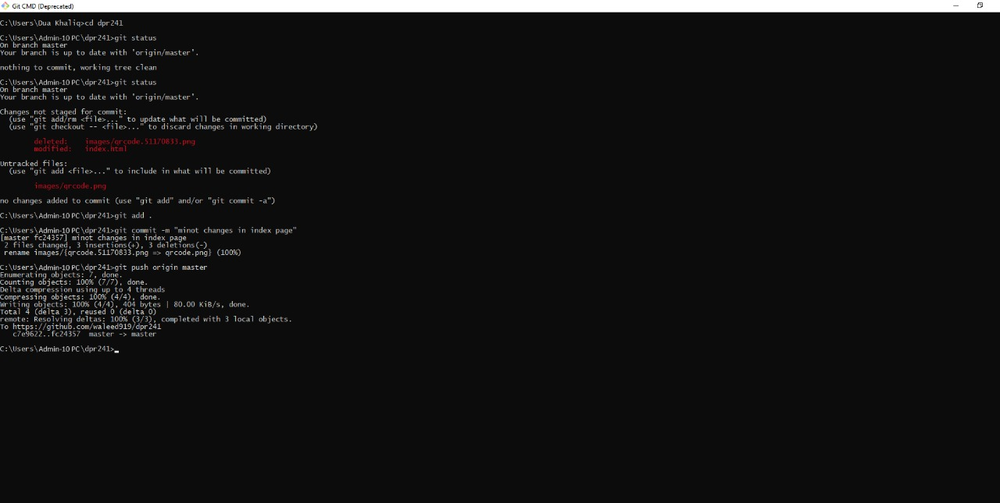

Git is a version control system that allows users to use keep a record of changes made to files on a remote repository. It also allows for collaboration with others on projects. Users will have two repositories, one local (which is the user’s working directory) and one remote (the origin or master) that is shared by all who are collaborating on a project. When using Git, users can change and save files on their local repositories as well as commit them to the remote repository (in our case via Bitbucket) by using the push command and retrieve them by using the pull command. They can also make branches of their files to work on and then merge them with the original branch.
Throughout my semester, i worked on GIT and learned many things from it regarding the track of commited files and pulling the code from a remote branch. I realized that this was because I did an initial commit before the tutorial. I learned from this observation that the purpose of an initial commit is that only one initial commit should be used as it's meant to be the first commit for a new repository. By going through this tutorial, I learned how to fork, or make a branch of, a file from a remote repository. I then made a change to the file and pushed the file back to the remote repository. I then made a pull request for the file to be reviewed and approved for incorporation into the original file.
There are many things that I like about using Git. I like being able to keep track of my files and have a record of the changes that I made on a remote repository. I am now more comfortable using the terminal commands to navigate through folders and files and make commits. As I gain practice, I am confident that I will be able to hone my commenting skills. Initially, I thought that I had to comment on each change that I made when making a commit. I learned over the course of the semester that this is not the case. For example, if I have two images that I added to my image folder but I only make a comment that I added one image, both images will still be committed and added to the repository. This is why it is important to be as accurate as possible within one commit message. I can see how using a version control system such as Git will become very important when collaborating with others on a project.
